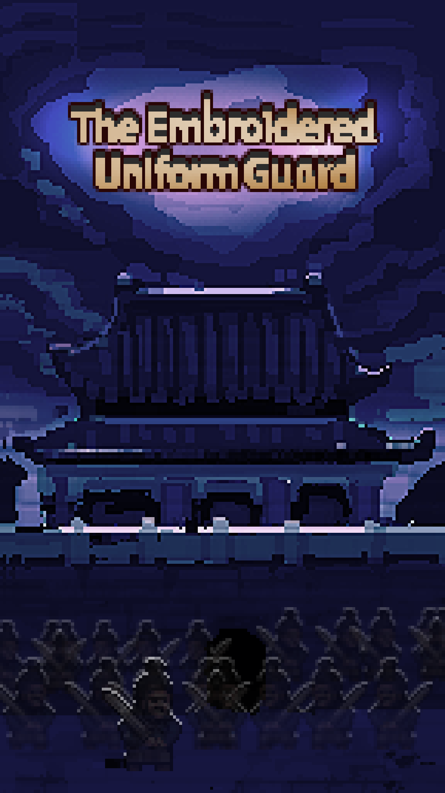
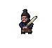
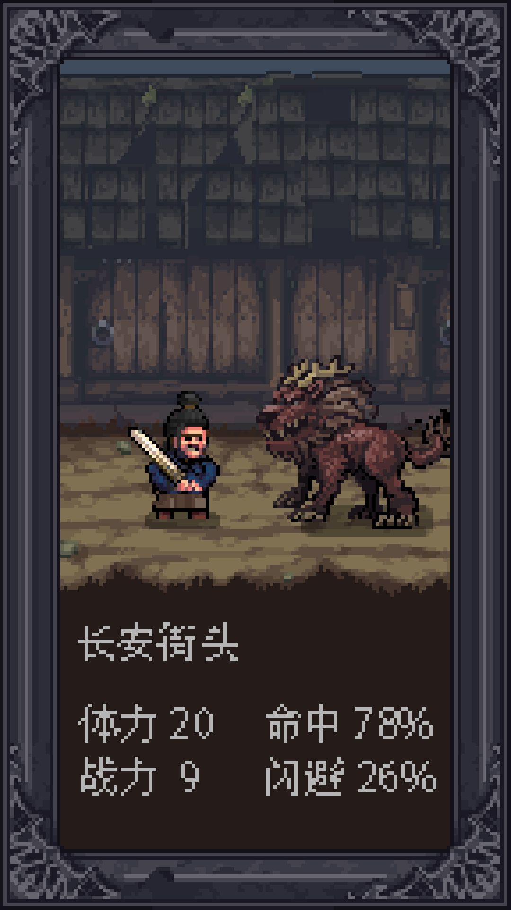

The EUG originated as early as 1360. They served as Zhu Yuanzhang's personal bodyguards and defended him during a battle with the warlord Chen Youliang. After Zhu founded the Ming dynasty and became the Hongwu Emperor, he doubted his subjects' loyalties towards him and was constantly on guard against possible rebellions and assassinations. One of the early duties of the EUG was to help the emperor spy on his subjects. The Hongwu Emperor increased the EUG's duties later, allowing them to inspect his officials at work in the capital city, before formally establishing it in 1382 with about 500 members. Their numbers subsequently increased to around 14,000 in just three years.
 The Embroidered Uniform Guard was tasked with collecting military intelligence on the enemy and participation in battles during planning. The guards donned a distinctive golden-yellow uniform, with a tablet worn on his torso, and carried a special blade weapon.is a type of traditional Han Chinese clothing which first appeared in the Ming dynasty.[2][3] It is also specific name which generally refers to a robe (generally tieli) decorated with the patterns of flying fish (although the flying fish is not the flying fish defined in the dictionary). The feiyufu worn by the Ming dynasty imperial guards reappeared in the 21st century following the hanfu movement and is worn by Hanfu enthusiasts of both genders.[4][5]
Qilin can spit fire, and its voice is like thunder. It is kind at ordinary times, but it is very fierce when it is angry. , with the establishment and development of the feudal system, it was used by the feudal rulers and became something to support their feudal ideology and a symbol of political prosperity
If you have any question, please contact us at sketchgame.art#gmail.com